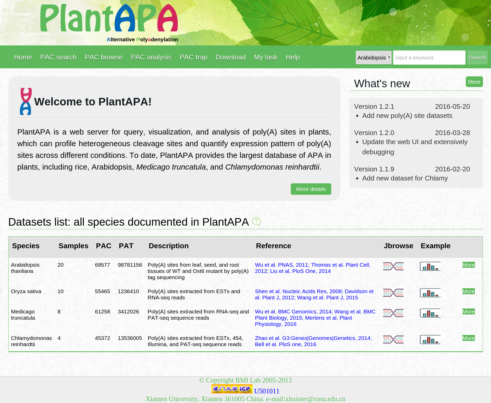

PlantAPA是一个植物全基因组poly(A)位点数据可视化和分析平台，从2015年3月1日开始到2016年5月20日结束，并且论文于2016年6月6日被frontiers in Plant Science | Plant Genetics and Genomics (SCI收录，IF=3.948) 接收。
PlantAPA提供了多种样式的、可交互的数据可视化方法，并且与基因组浏览器无缝连接，可以实现对不同情况下poly(A)位点表达量信息的描述。通过PlantAPA，用户可以使用平台提供的工具来分析不同区域上的poly(A)位点数据，比如DE gene, DE pac等等。除此之外用户还可以上传自己的short reads 、ESTs 及 poly(A) site extraction数据来进一步研究分析。
工
作
1.完成用户数据上传、数据过滤、分析处理、数据可视化及数据下载等功能。
2.使用 PHP 进行逻辑处理、数据库增改删查、其它应用接口调用等。 JavaScript 实现前端页面的功能，包括数据可视化效果。平台中多出使用了Jquery，并且用到了Ajax的无刷新提交。
3.独立完成，开发期间包括三个版本的更新，后期对网站进行了大量的测试及 bug 修复。
4.基于该平台的论文已经被期刊接收，点击查看。